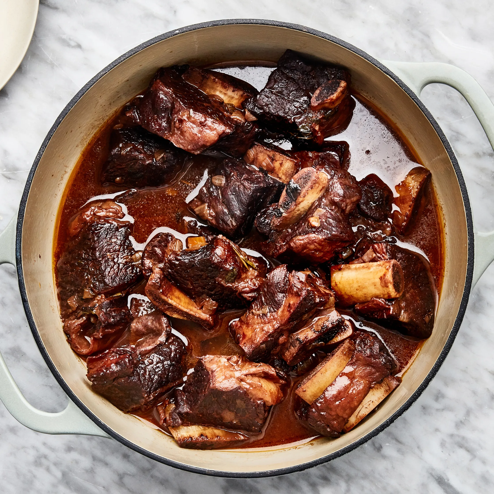

Description
These Red Wine-Braised Short Ribs are even better when they're allowed to sit overnight.
Serves 6.
Ingredients
- 5 pounds bone-in beef short ribs, cut crosswise into 2-inch pieces
- Kosher salt and freshly ground black pepper
- 3 tablespoons vegetable oil
- 3 medium onions, chopped
- 3 medium carrots, peeled, chopped
- 3 celery stalks, chopped
- 3 tablespoons all-purpose flour
- ....
|

|